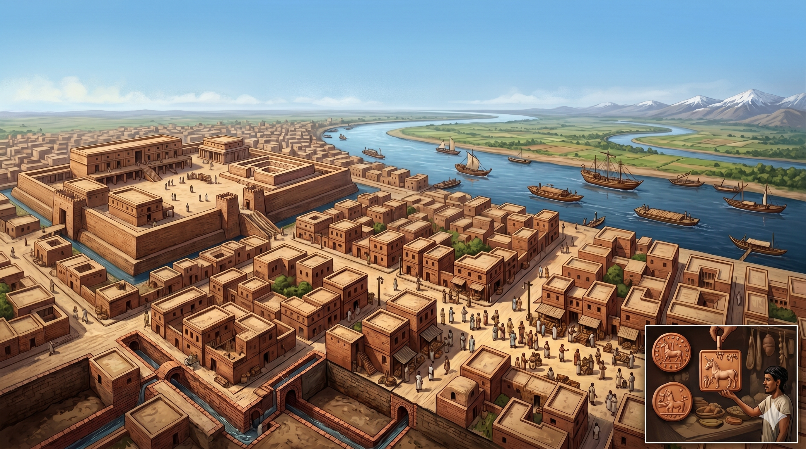

Indus Valley Civilisation: Herald of A New Era in Ancient Indian History
22 June 2026
#Indian History
In 1829, a deserter from the East India Company’s army, Charles Masson, was travelling through the bleak lands of Punjab state. His job was to accrue intelligence and gather historical artifacts throughout his journey. Masson was greatly fascinated by the campaigns of Alexander the Great and most of the places he visited during this adventure were from the stories of Alexander's chroniclers. Harappa, once a metropolis of Indus Valley Civilisation on the banks of the river Ravi, was one of those places. In the book, Narrative of Various Journeys in Baluchistan, Afghanistan, and the Punjab, Masson mentioned the richness of this place for its antique artifacts, mostly buried in the soil, but erroneously identified the site as coeval with Alexander’s campaign. It took another century to comprehend the importance of Harappa, when an Indian archeologist, Dayaram Sahni, initiated excavation of two mounds at that place in 1921.
The discovery of Indus Valley Civilisation, also known as Harappan Civilisation, was a mere serendipity. No one imagined that a pivotal chapter of Indian history lay dormant beneath immense layers of soil for millennia. This gigantic archaic...
Read More